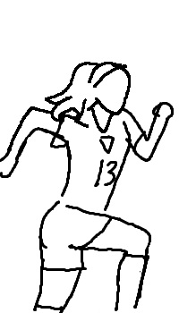
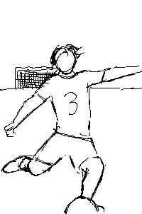

The goal of our program is to compete at the highest level and win ARC Championships. Our Men's team is focused on regaining their title from 2016, while our women's team will be defending their title from last season.
College located in Council Bluffs, Iowa
 Jessica Williams (left) and Mason Johnson (right) have both set records for their teams for most goals scored